Business Card - Portfolio
Concepts
Personal exercise and exploration of different business card styles and compositions. As a challenge, a limited number of hours were given for 3 days. Giving the following results of various artistic currents.
All the information displayed are from fake people and businesses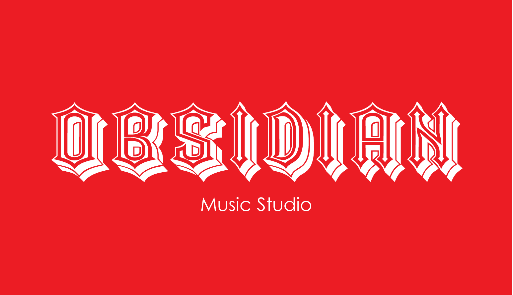
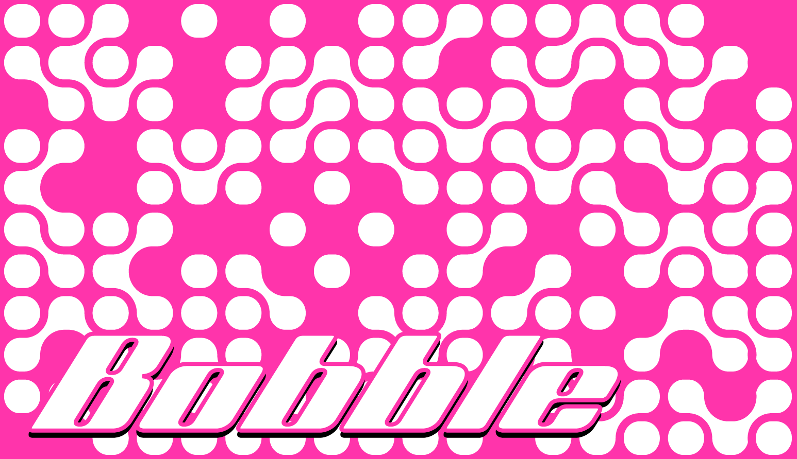
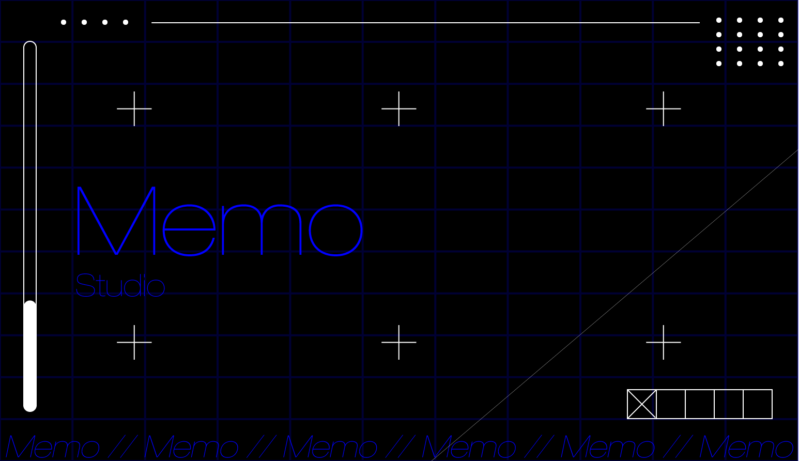
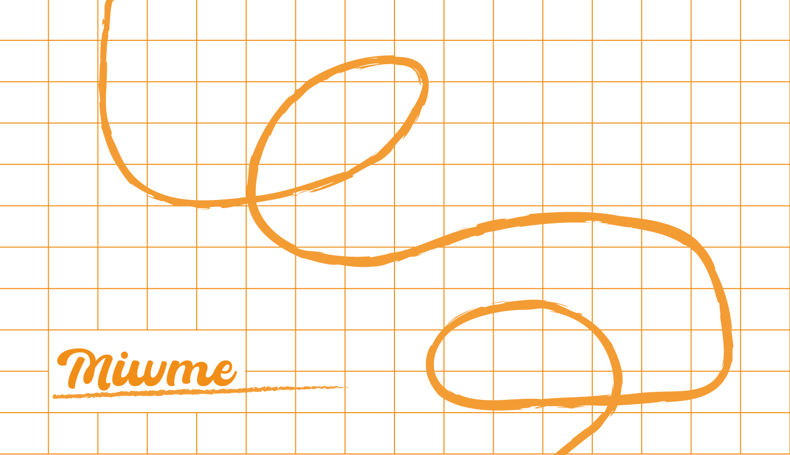
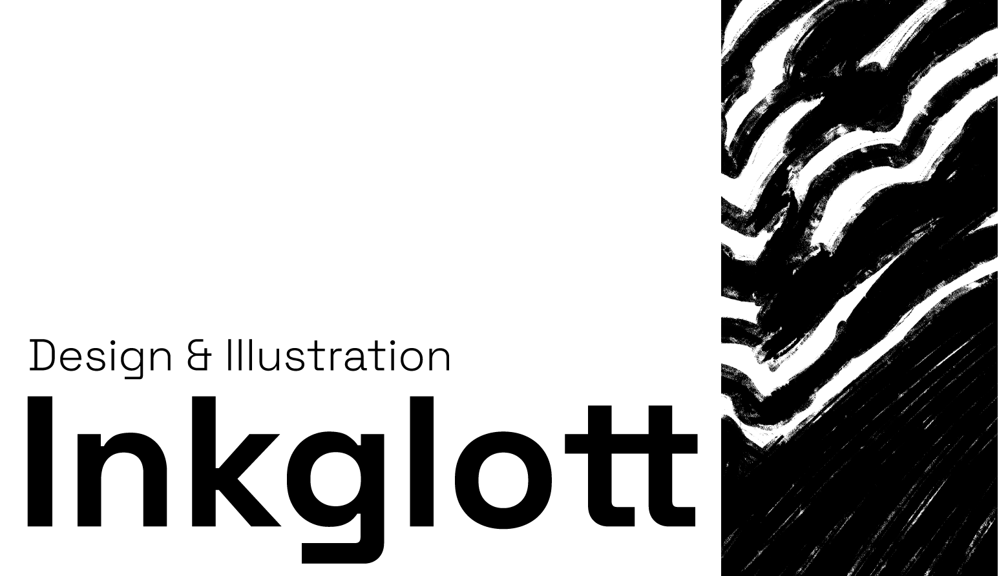
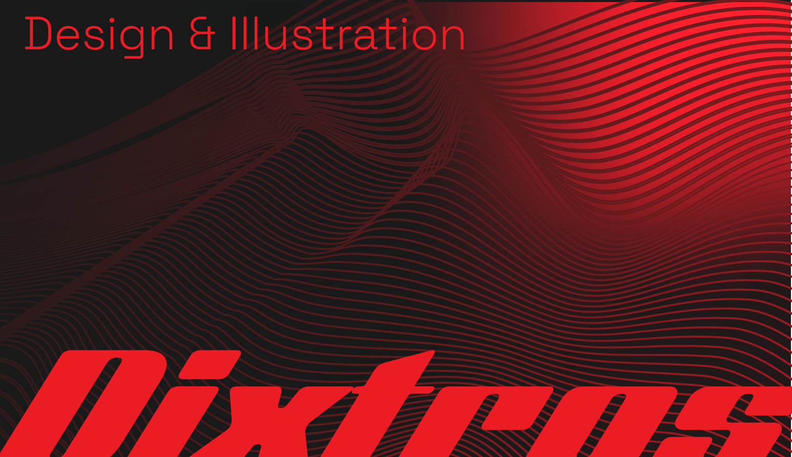
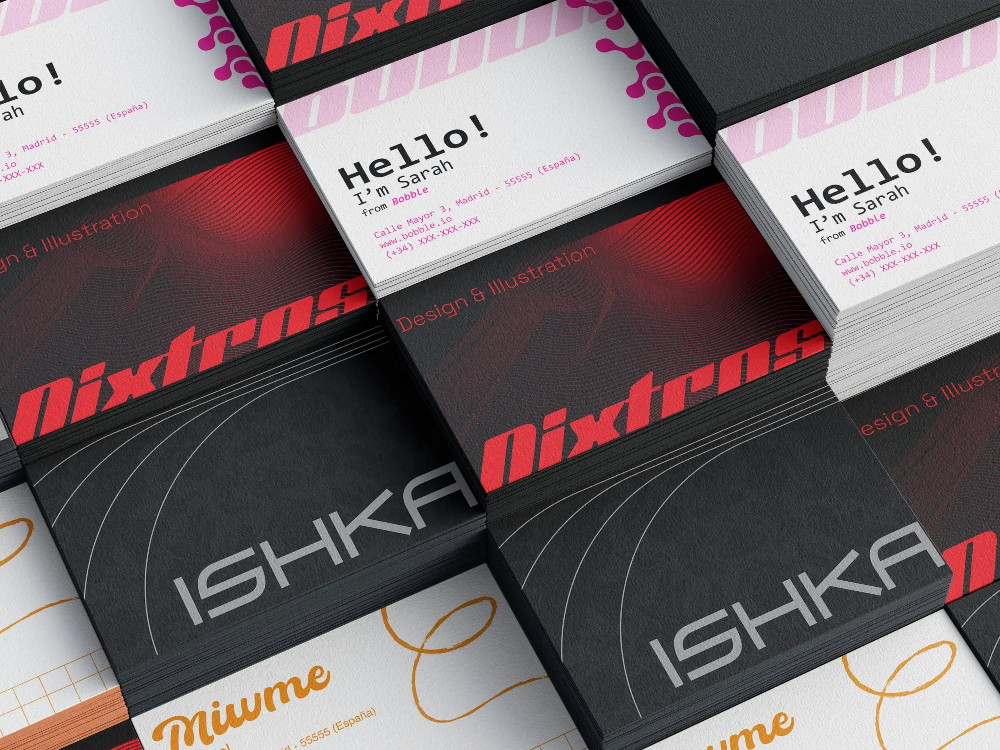
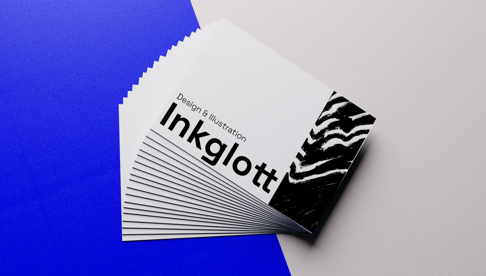
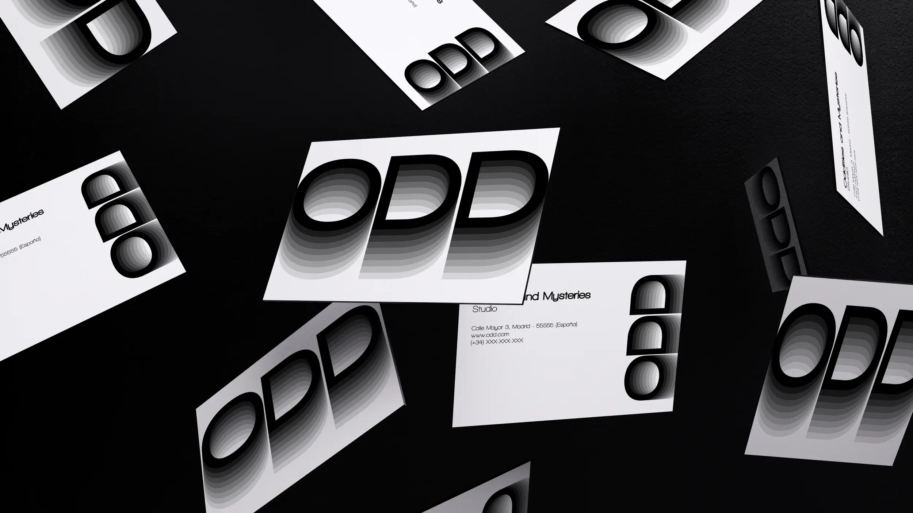
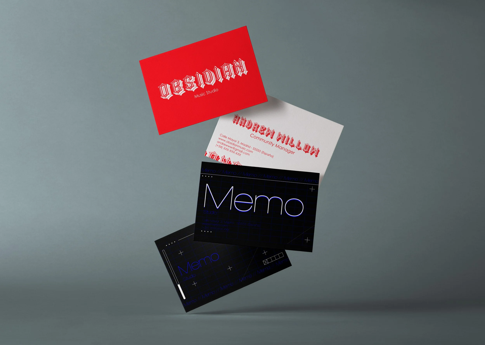
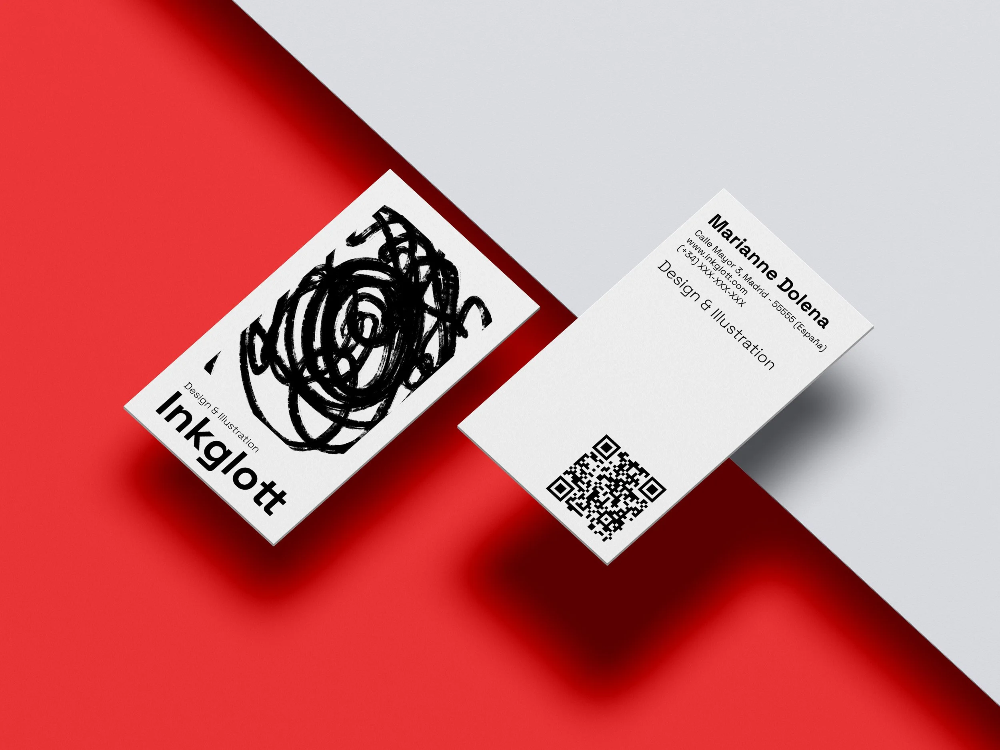